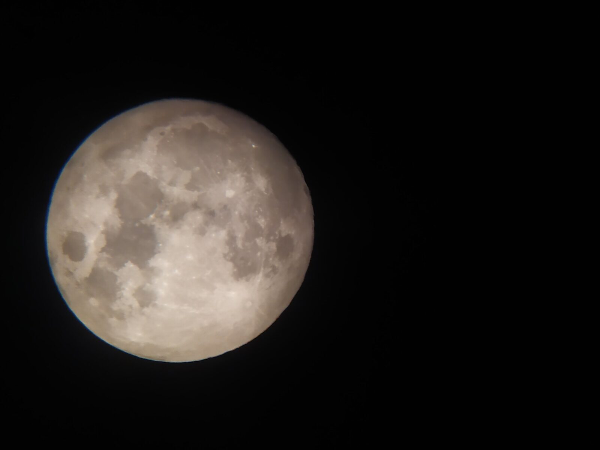
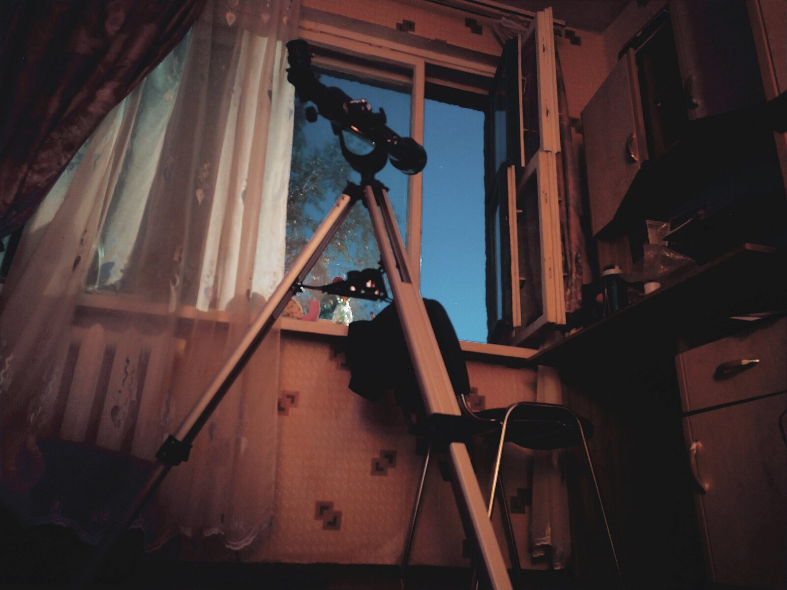
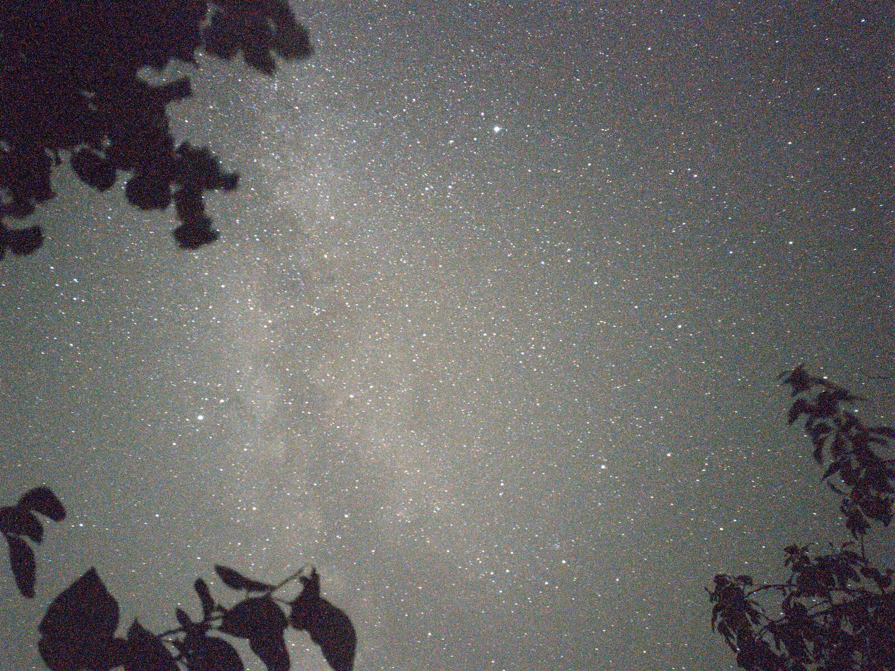
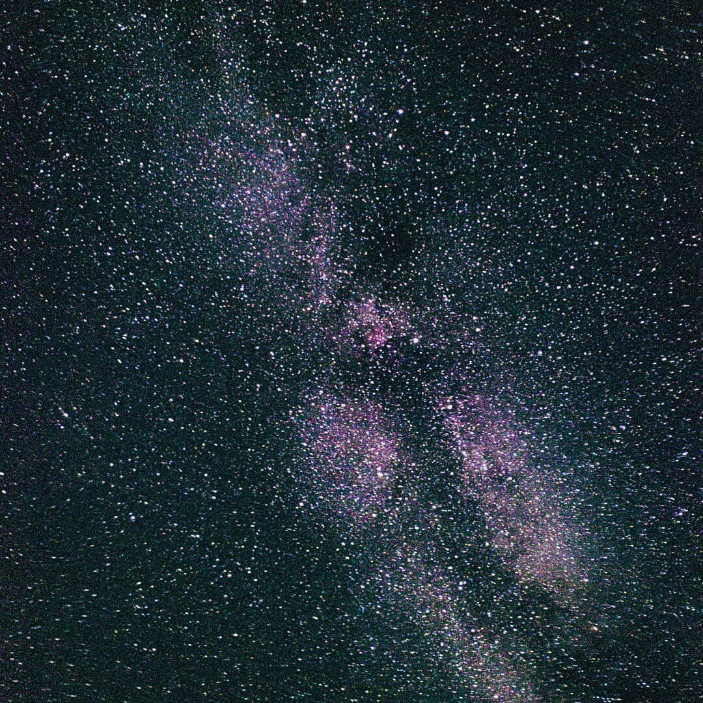
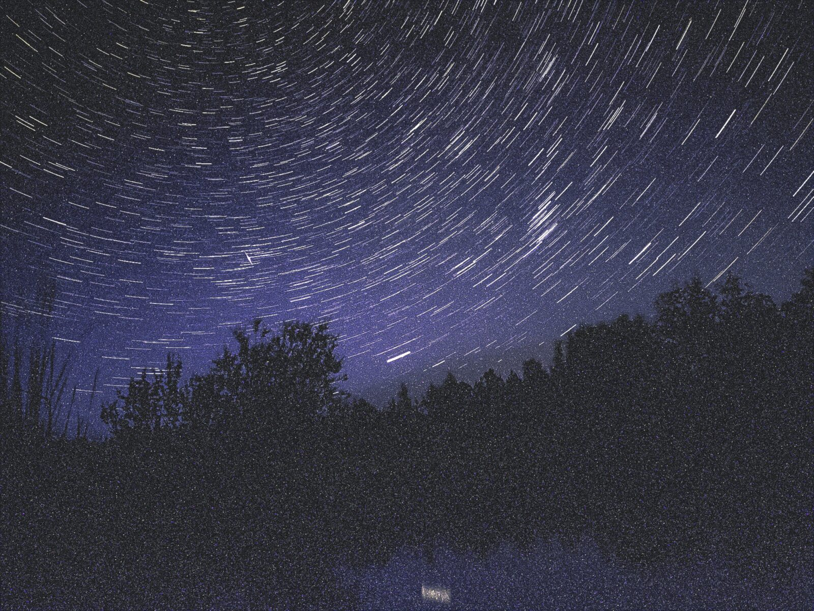
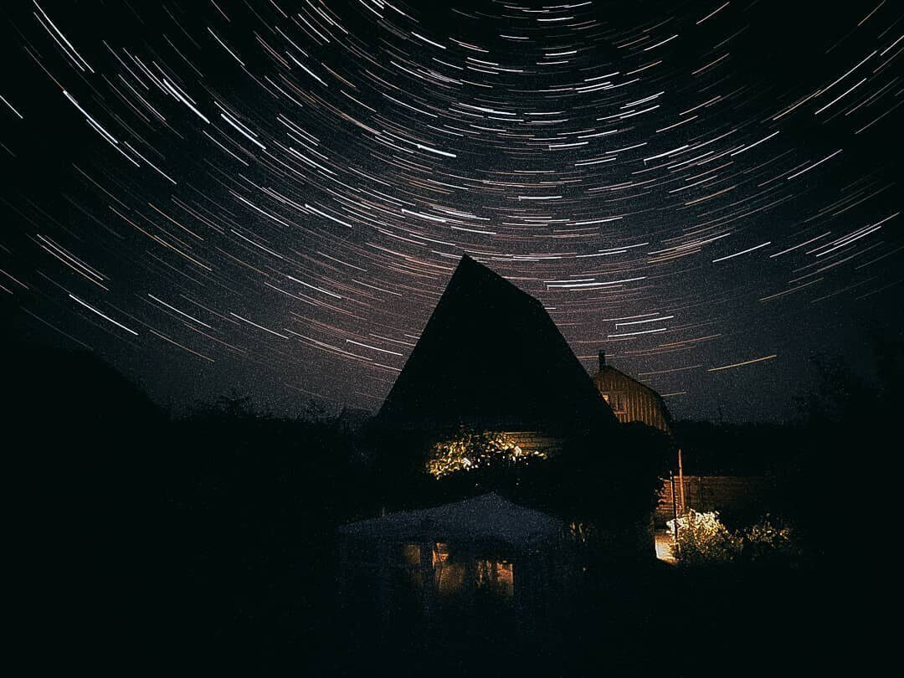
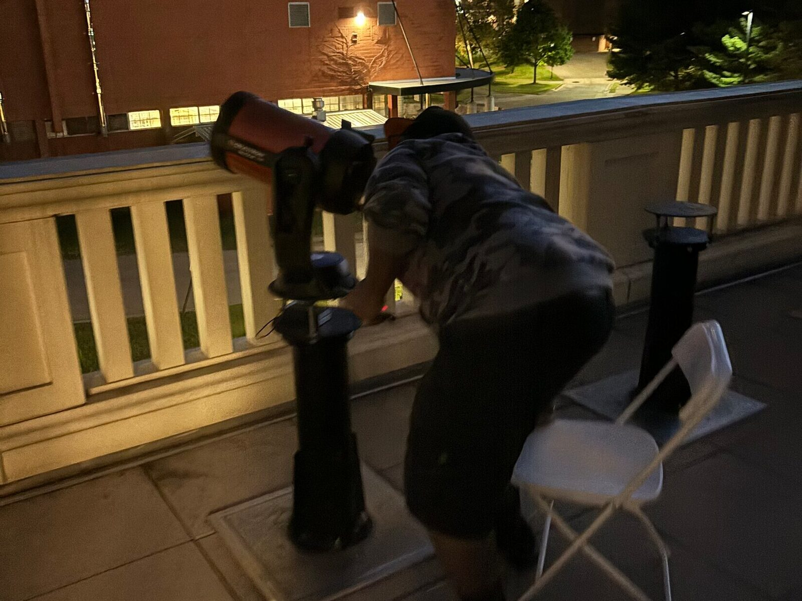
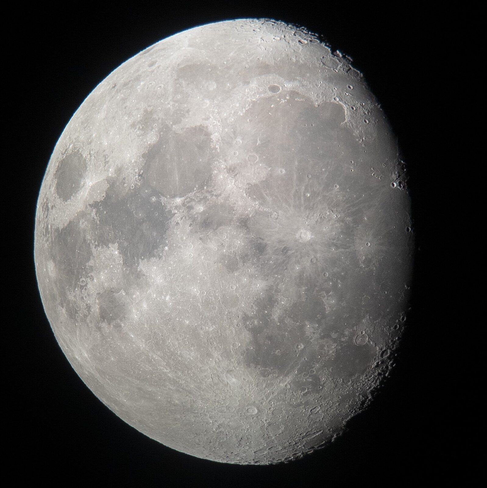
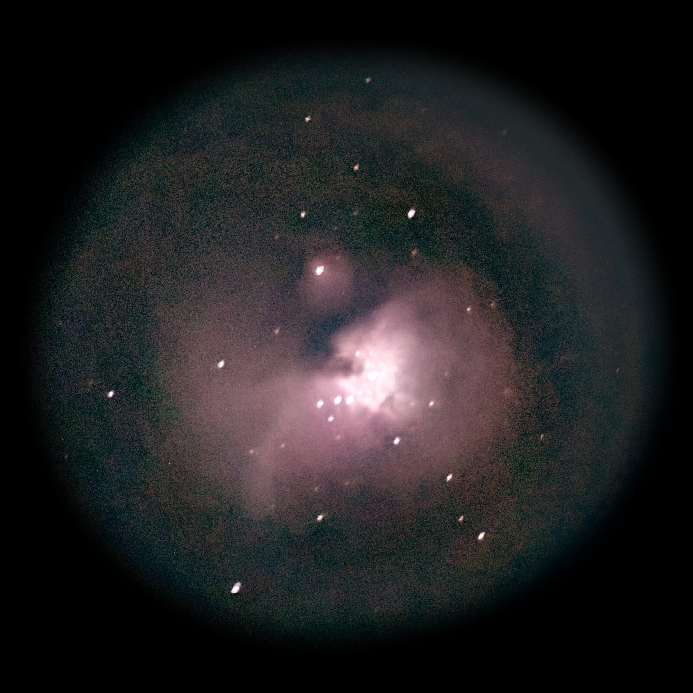
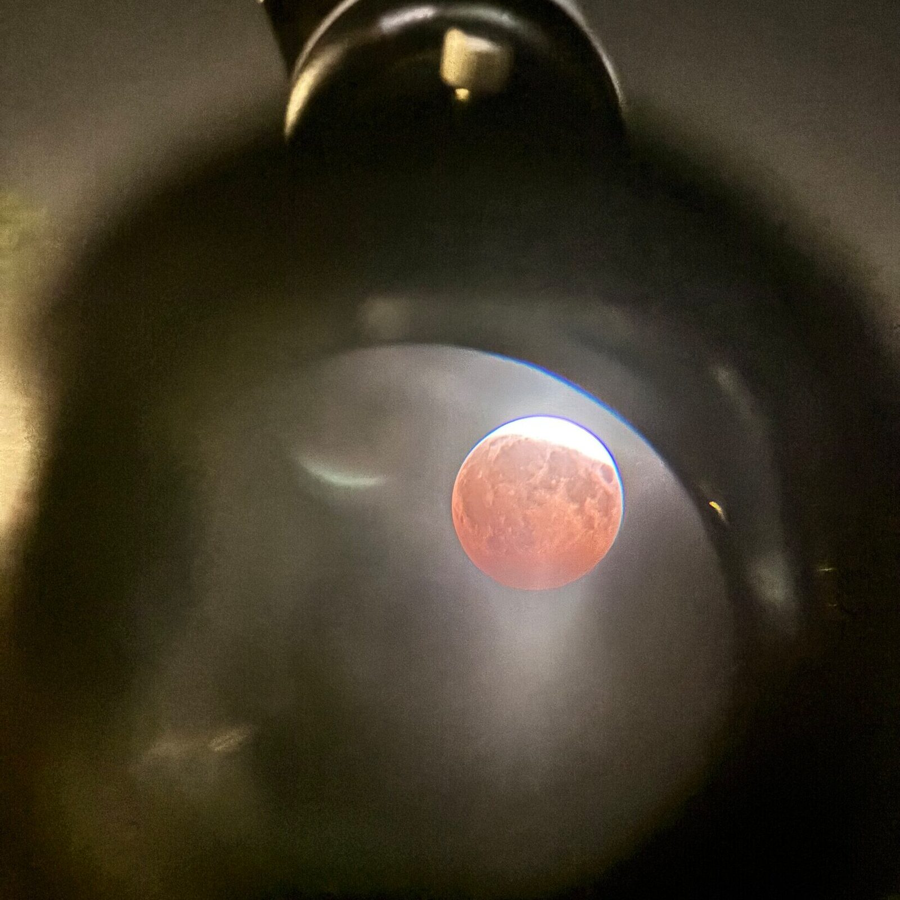

Sky
Everything on this page I made myself, with a phone held to an eyepiece or set on a wall. In Belarus the phone was a Redmi Note 7. The 2021 pictures were stacked in Sequator and adjusted in Lightroom.
Before Berea. Mazyr and the family's country houses, 2020 to 2021.






At Berea. The physics department's 8-inch telescope, an iPhone held to the eyepiece, 2024 to 2026.




Since fall 2025 I have been the astronomy coordinator of the Berea College Physics Club. I run the club's telescope nights. One is a Moon night for children on the observing deck of the science building. Others are open nights with the department's 8-inch telescope on a campus field, including the public night for the partial lunar eclipse of 27 August 2026 on the alumni field. Before that, I helped set up International Observe the Moon Night on 14 September 2024.